Fig. 5.4 Regular Dodecahedron defined by 5 intersecting Tetrahedra |
As Fuller often pointed out, the Cube consists of 2 intersecting Tetrahedron.
| 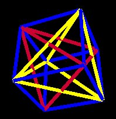 | 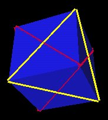 | 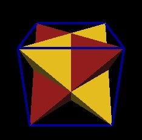 |
| Figs. 5.1, 5.2, 5.3 Cube defined by 2 intersecting Tetrahedra | ||
When the regular Dodecahedron is defined by the 5 cubes, as shown above, each of the Dodecahedron's vertices coincided with 2 different Cube's vertices. By considering the Tetrahedra defined by these Cubes, we can eliminate this redundancy. That is, we can define the regular Dodecahedron by 5 intersecting Tetrahedra in such a way as to assign a single Tetrahedron's vertex to a single Dodecahedron vertex. In this way a "minimal" constuction definition for the regular Dodecahedron is achieved.
|
Fig. 5.4 Regular Dodecahedron defined by 5 intersecting Tetrahedra |
However, there are actually 2 ways to assign the Tetrahedra within the regular Dodecahedron. In one case, the Tetrahedra intersect each other to define what appears to be a "clockwise layering" and in the other case, the 5 Tetrahedra intersect each other in a "counter-clockwise layering" manner.
|
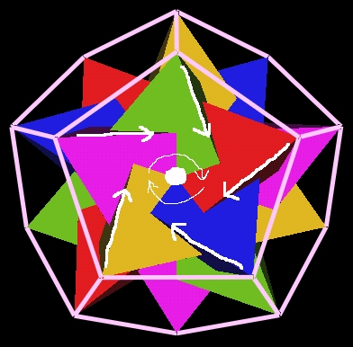
Fig. 5.5 Clockwise layering of the 5 Tetrahedra |
This gives the 120 Polyhedron either a clockwise or counter-clockwise orientation in its construction while remaining globally invariant with respect to its external vertex orientation.
|
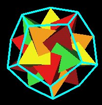
Fig. 5.6 Counter Clockwise |
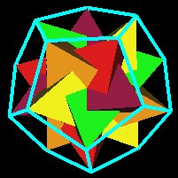
Fig. 5.7 Clockwise |
|
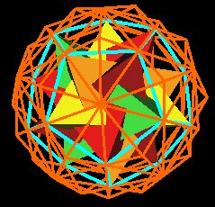
Fig. 5.8 Same 120 Poly orientation |
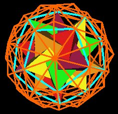
Fig. 5.9 Same 120 Poly orientation |
With a Cubeoctahedron (VE) constructed out of sticks and rubber vertices, Fuller often demonstrated what he called the "Jitterbug" motion. The Jitterbug shows how the VE can fold up into an Octahedron as well as how an Octahedron can expand in the the VE.
| 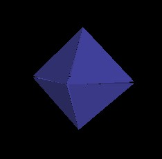 | 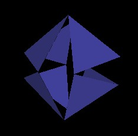 | 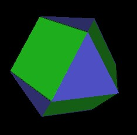 |
| Fig. 6.1 Octahedron position |
Fig. 6.2 Jitterbug in motion
|
Fig. 6.3 VE position |
The Jitterbug has 8 triangular faces. As these 8 faces rotate, they also move radially inward or outward from the center of volume along its 4 rotation axes.
| 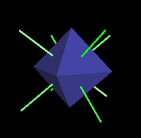 |
|
Fig. 6.4 Motion along 4 rotation axes
|
These are the same 4 rotation axes that we used to rotate the 4 cubes.
|
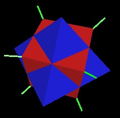
Fig. 6.5 Jitterbug rotation axes |
Fuller pointed out that between the VE and the Octahedron positions, the Jitterbug will pass through an Icosahedron position.
| 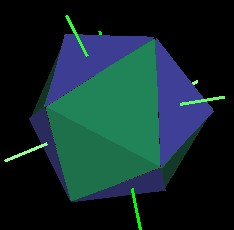 |
|
Fig. 6.6 Jitterbug defines the Icosahedron
|
If we allow the 8 rotating triangles to interpenatrate each other, then the Jitterbug can rotate and contract into two intersecting tetrahedra to define a cube.
| 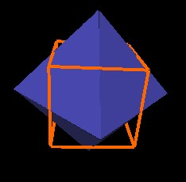 | 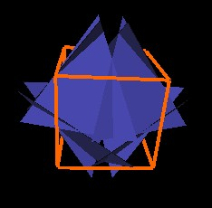 | 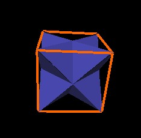 |
| Fig. 6.7 Jitterbug in Octahedron position |
Fig. 6.8 Jitterbug in motion
|
Fig. 6.9 Jitterbug in Cube position |
Further rotation and contraction results in the definition of another Icosahedron.
| 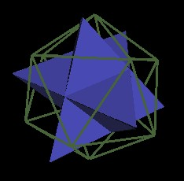 | 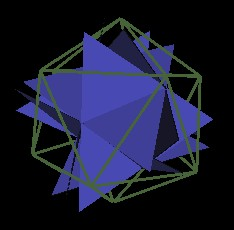 | 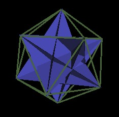 |
| Fig. 6.10 Jitterbug in Cube position |
Fig. 6.11 Jitterbug defines the Icosahedron
|
Fig. 6.12 Jitterbug in Icosahedron position |
When the 120 Polyhedron is considered with all of its defining, internal polyhedra, many Jitterbugs can easily be identified. These Jitterbugs are not all in the same open position, nor of the same scale. Here is an illustration looking into the 120 Polyhedron through a regular Dodecahedron vertex. (The edges of the 120 Polyhedron are not shown.)
|
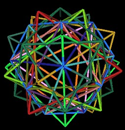
Fig. 6.13 Looking into a Dodecahedron vertex |
In the next sequence of illustrations, I display various Jitterbugs by changing the associated polyhedron into a solid appearance. All of these Jitterbugs have the same face centered rotation axis passing through the regular Dodecahedron's vertex.
|
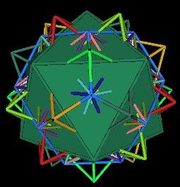
Fig. 6.14 A Jitterbug in the Icosahedron position |
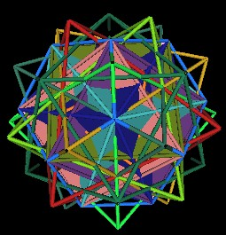
Fig. 6.15 A Jitterbug defined by Cube edges |
|
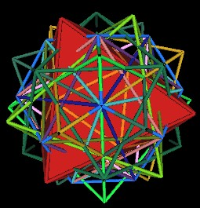
Fig. 6.16 A Jitterbug in the Octahedron position |
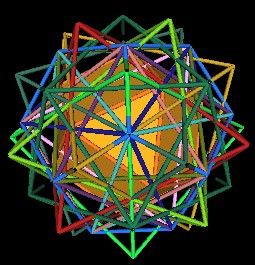
Fig. 6.17 A Jitterbug in the VE position |
|
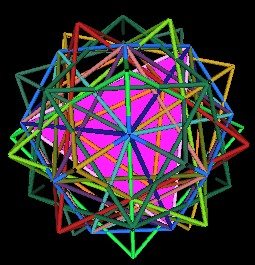
Fig. 6.18 A Jitterbug in the Tetrahedron position |
It is difficult to see the Jitterbug defined by the Cube's edges in the above illustration, so here is a different perspective. The Dodecahedron is shown with the 5 Cubes. Some of the edges of the Cubes are outlined in black. Filling in the triangular faces in black reveals the Jitterbug.
| 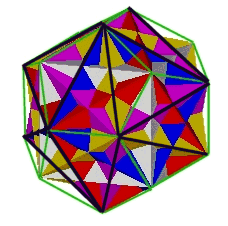 |

|
| Figs. 6.19, 6.20 A Jitterbug defined by the Cube edges | |
Notice the variation in the triangular face sizes and orientations. These variations show that there are many different Jitterbugs operating within the 120 Polyhedron.
Recall that we first introduced the rotation of 4 Cubes, plus a stationary Cube, as the defining motion for the 120 Polyhedron. But, as we have shown here, a single Jitterbug uses the same 4 axes of rotation, can be used to define Cubes (and therefore, regular Dodecahera), Octahedra, Icosahedra, and adds an additional expansion/contraction motion which the 4 rotating Cubes and Octahedra did not have. By using 5 Jitterbugs and their expansion/contraction/rotation motion instead of the 5 Cubes and Octahedra, all the 120 Polyhedron vertices are defined.